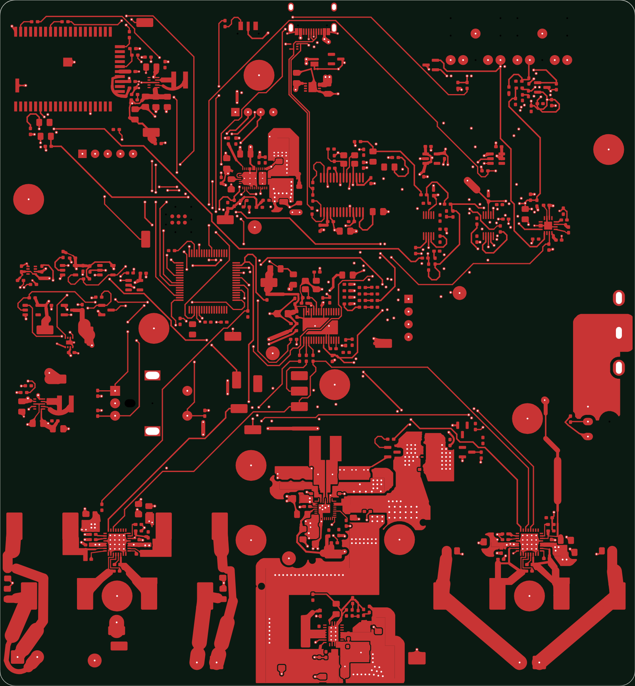
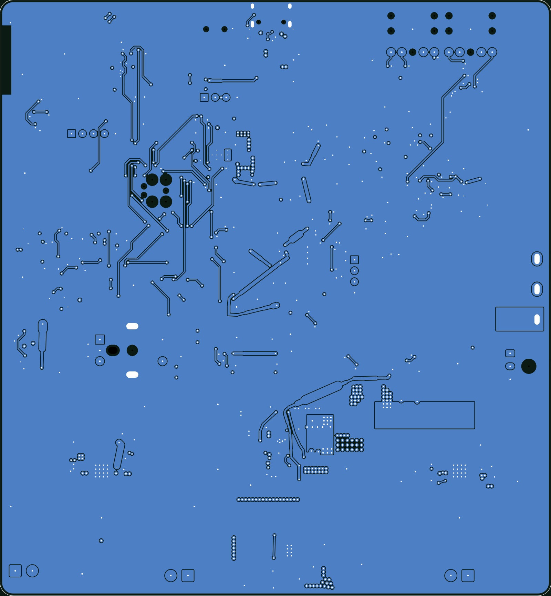
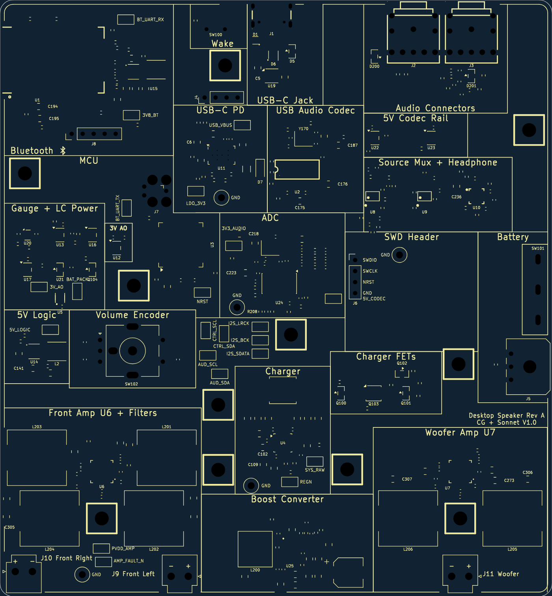
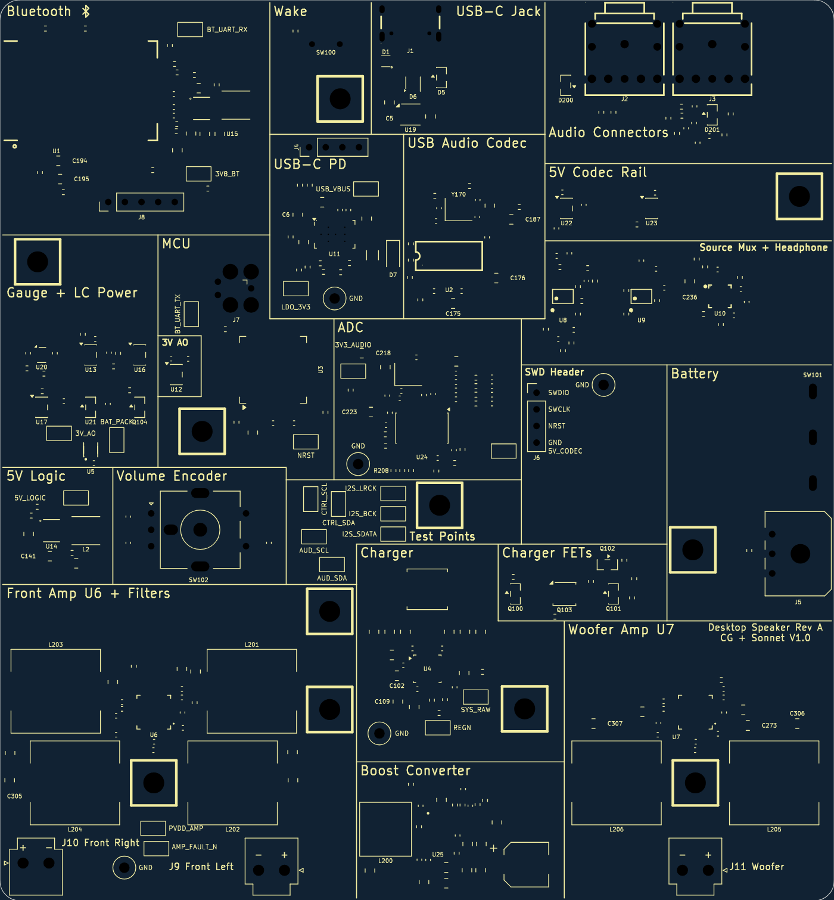
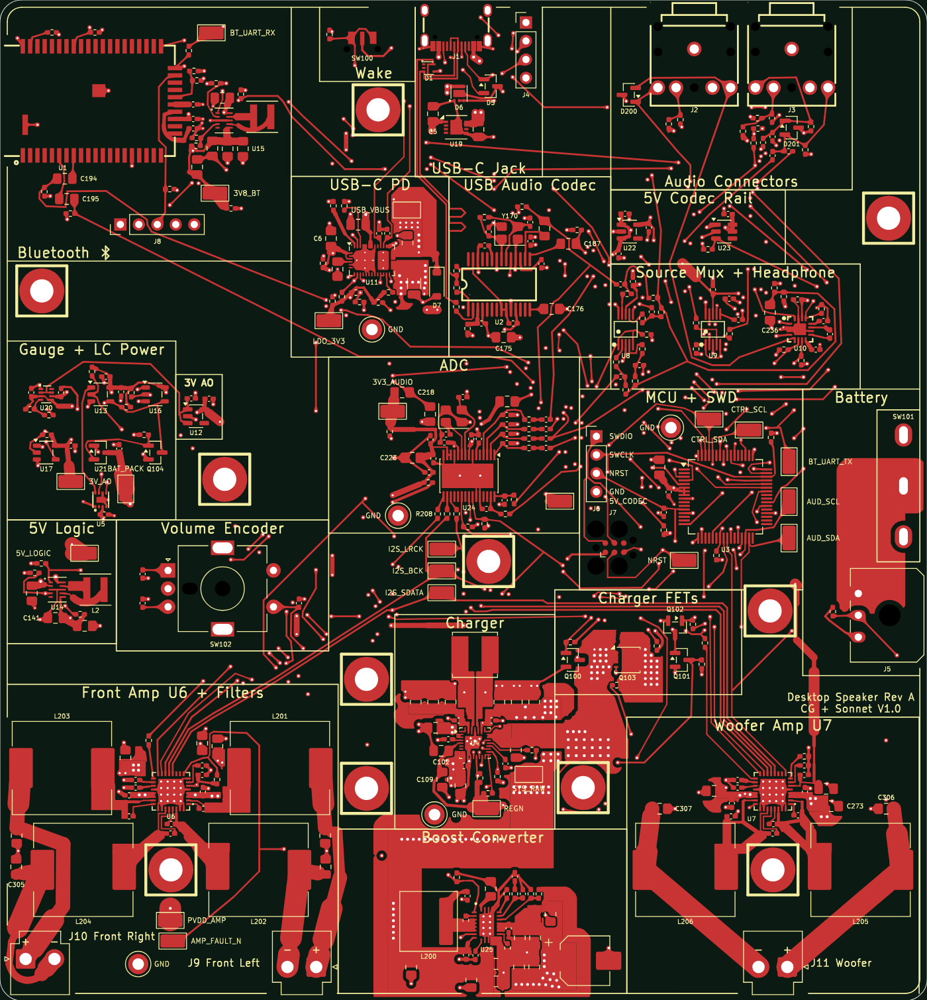
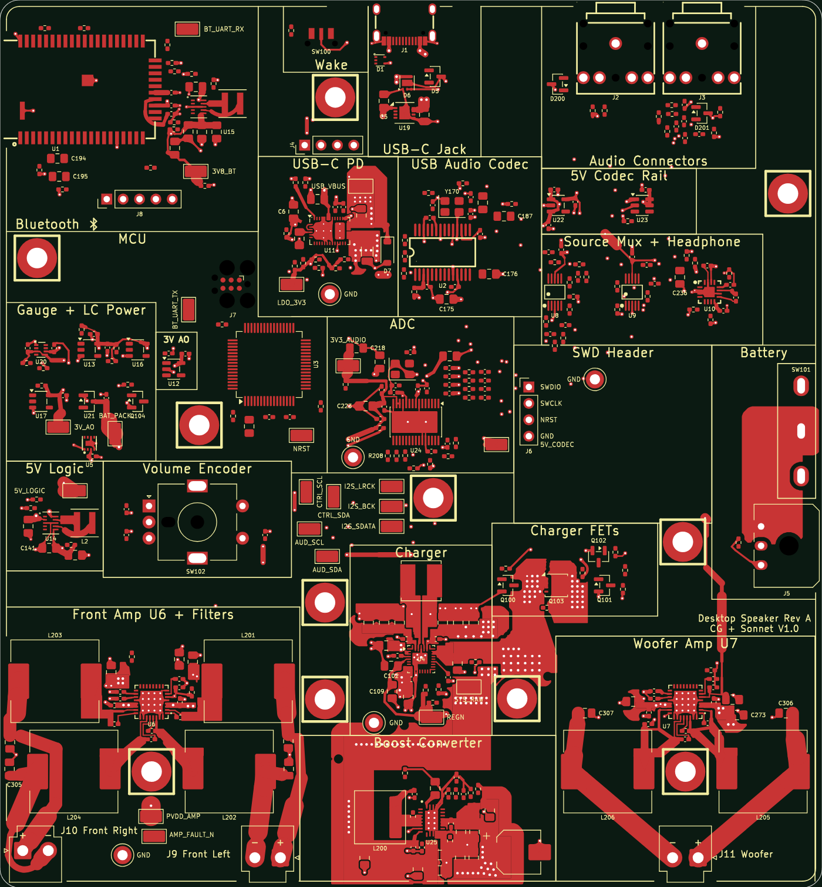
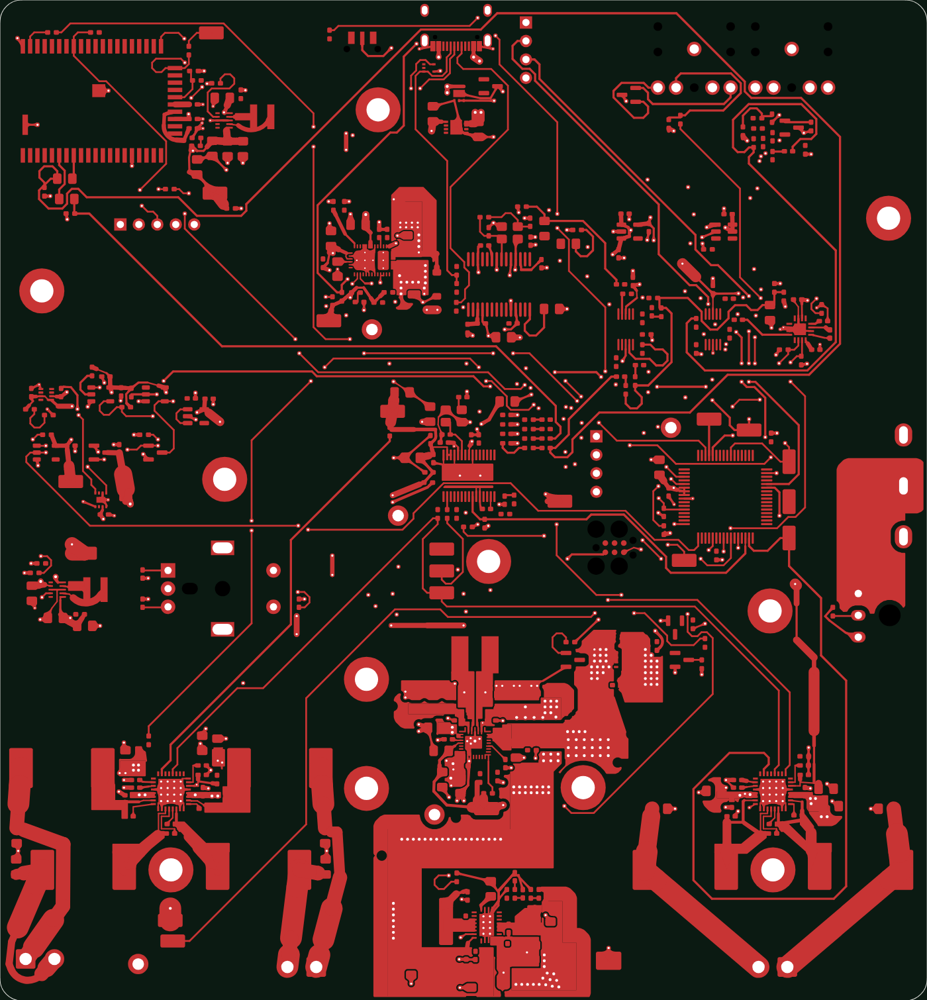
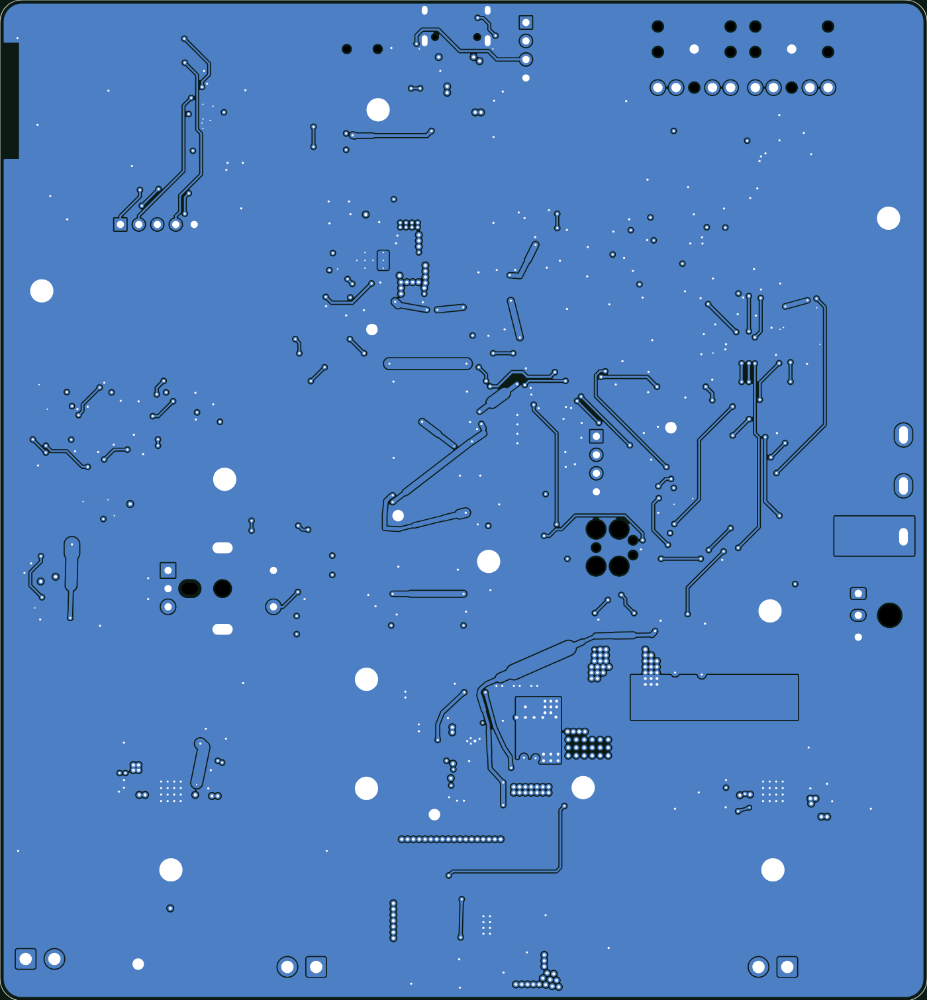

‹ back to the Desktop Speaker project
Desktop Speaker: routing progress
Last updated 2 Nov 2026 (silkscreen and charge policy done). Rules: exact 0/45/90 degrees only, shortest runs, stages in order of importance, each stage locked before the next.
| Stage | Scope | Status | Notes |
|---|---|---|---|
| Placement | R8/R8b moves, committed 71bdda7 | done | DRC 0, pad nets unchanged, signal minimum length -10 %. |
| Placement R10 | I2S / I2C / USB-C pin order, blocked escapes | done | Committed 436c404. DRC 0, pad nets unchanged, 15 parts moved. The I2S trio and amplifier I2C need B.Cu hops over In2 GND because U6 and U7 are mirror-identical. |
| Router tool | Exact-octilinear A* (route_oct), upgraded | done | Committed 5c86df6. Geometry 100 % exact; BM83 keep-out, audio spacing, GND stitching vias, switch-node spacing and pour check added. Used as a geometry engine, not as an unattended router. |
| S0 and S0b | Power loops and paths; blocked escapes; USB J1 to U2 template | done | Committed 4de035e (board RT-1). DRC 0, no part moved, USB pair complete (32.8 mm coupled at 0.15 mm gap), blocked pin exits 56 down to 28. |
| S1 to S3 | Clocks and I2S, analog audio and amplifier I2C, then control and logic | run done, board not finished | Board RT-2, committed d1deaa0. 145 of 283 connections routed (51 %), 48 of 140 nets complete. Every segment exactly 0/45/90, DRC 0 violations, no part moved, no rule changed. Length quality fails: median 1.175 times the octilinear minimum (target 1.15), 95th percentile 3.6 (target 1.4). |
| Silkscreen | Tile the board with aligned section boxes | done | Board RT-3, committed 19814e0. 22 boxes now tile the whole board with shared edges and T-junctions; 5V Logic, Volume Encoder and Front Amp form the T. Only silkscreen changed: 0 parts moved, DRC 0 violations. Four boxes are L-shapes because of fixed parts. |
| Charge policy | Charge current for the chosen battery with USB PD | done | Fast charge 4.0 A (0.4C of the 10 Ah pack, 2 A per cell), input capped at 17 W so any PD source of 18 W or more charges at the same rate, full-charge voltage 4.10 V (4.16 V max), warm-zone suspend at 45 C. Firmware only, no hardware value change. About 2.75 h empty to full. |
| Next: hand work | 136 open connections | to do | Causes: no legal pin exit (43), boxed in by neighbouring copper (65), pin order or topology (22), keep-outs and pour islands (6). Remedies: hand templates for the I2S hops and AUD I2C crossing, about 12 small part nudges, a router fix, then teardrops and fab output. |
| S4 to S6 | GND fan-out and stitching, pours and necks, clean-up, teardrops, review | waiting | Final gates: r7_metrics, DRC with sentinel, independent re-measurement. |
Router result RT-2 (S1 to S3 done)
Placement R10 plus S0b copper plus the upgraded router, 51 % of connections routed. Work in progress, not a releasable board. The long 45 degree runs are the new routes.


Silkscreen section boxes (RT-3)
Before and after. The boxes now tile the whole board with no gaps; the empty strip above Front Amp is gone and 5V Logic, Volume Encoder and Front Amp form a T.


Decisions taken (owner asked for judgement)
| Item | Decision | Reason |
|---|---|---|
| U2 D+ entry | Keep the inner entry under the chip | A U-turn needs 1.81 mm of room; only 1.16 mm exists. Moving R172 would cost more than it gains. |
| BM83 and J8 nets in S3 | Route them first in stage S3 | They are bound by the module keep-out, so they must get their corridors before the general nets. |
| U4 pin 18 (BATP) | Hand-route it; add a narrow, documented exemption to the 2.0 mm switch clearance for this one stub if needed | BATP is a sense line right next to the boot-strap pad, a 2.0 mm clearance cannot be met at 0.2 mm pad spacing. |
| J7 (programming header) edge clearance | Allow 0.25 mm copper-to-hole at J7 only, with diagonal hand escapes | The fabrication minimum (about 0.2 mm; to be confirmed against the JLC capability page before ordering) is lower than the 0.5 mm rule; the header is boxed in otherwise. |
| Charge current | 4.0 A, input cap 17 W, charge to 4.10 V (4.16 V maximum, never 4.20 V) | Safe first: 2 A per cell is 80 % of Samsung's standard rate and a third of the cell maximum. Reliable second: the lower voltage and 45 C warm cut-off extend cell life. Fast third: still about 2.75 h empty to full. The real limit is U4 heat (about 2 W at 20 V), so the layout under U4 matters more than the current setting. |
| Battery pour at U4 pins 22/23 | Widen it: 0.6 mm for at most 0.3 mm, then at least 1.6 mm by x 154.05 and 2.5 mm by x 154.8; move R102 out of the BAT_INT strip | Measured on RT-2: the U4 to Q103 path is 3.3 mOhm; these two fixes give about 2x margin at 4 A charge and 6 A discharge. |
Earlier pictures
Top layer F.Cu, board 127.5 x 137.6 mm. Red = copper. Generated from the actual .kicad_pcb files with kicad-cli.
1. Placement: before and after the restart
Left: the old board (R6q placement, with the routing judged not good enough). Right: the new routing baseline R9-0 (commit 71bdda7): power copper and pours only, signal tracks stripped, parts moved. The MCU U3 is now left of centre.


2. Octilinear router trial: all 140 signal nets re-routed on the old placement
The router's best strict run (Hga-3). Every track segment is exactly 0, 45 or 90 degrees with 0 DRC clearance errors, but only 130 of 283 connections (46 %) were completed, so it is not a finished board.

